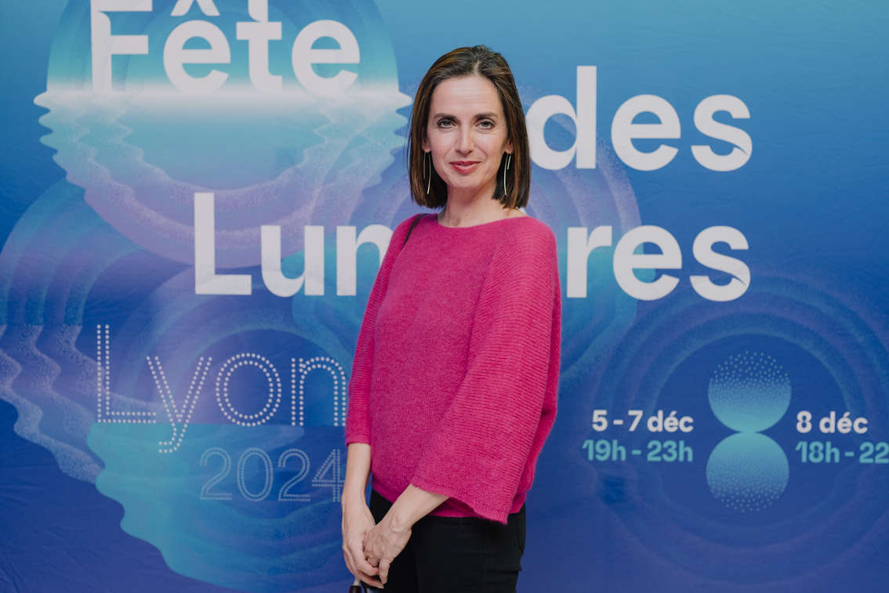
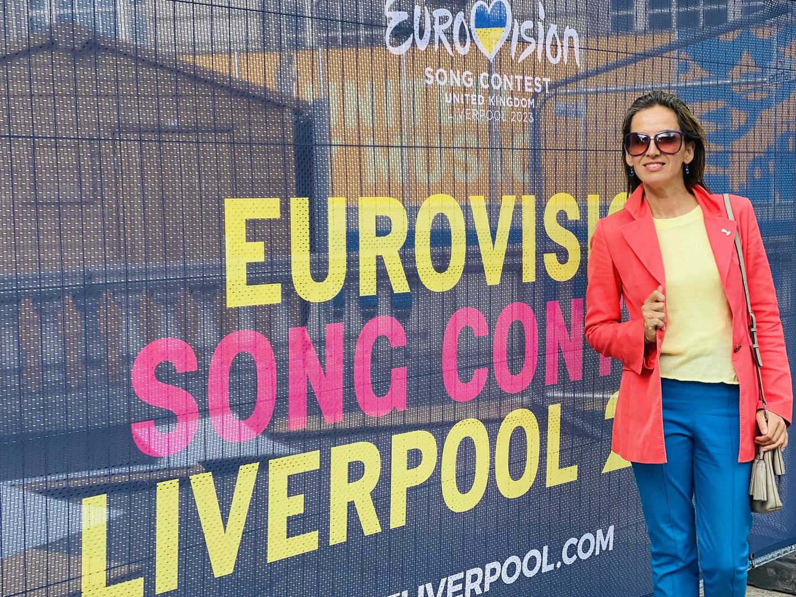
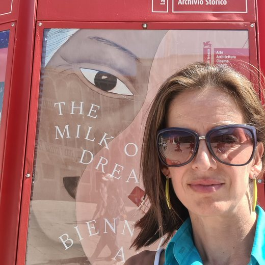
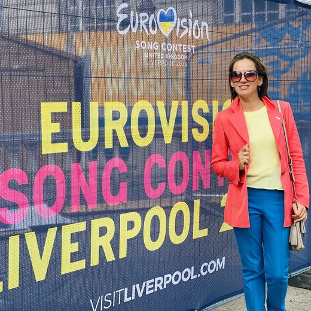
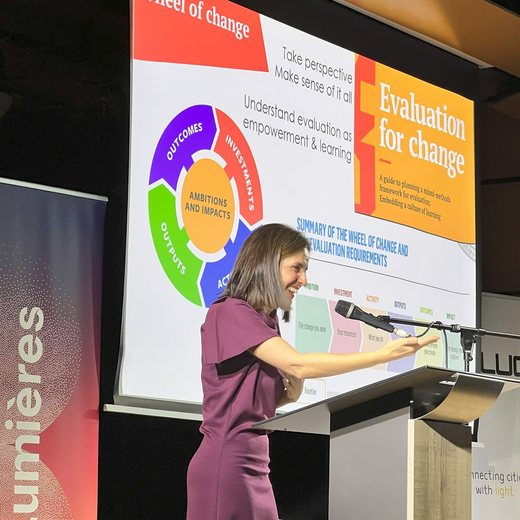
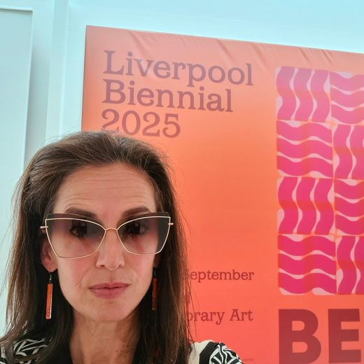
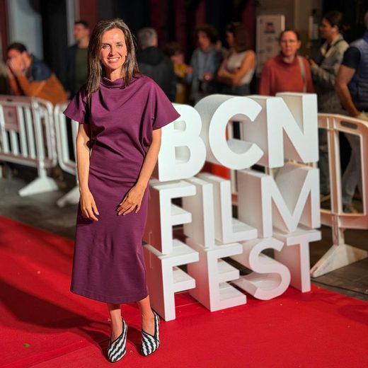
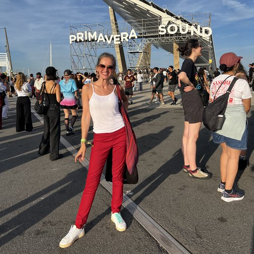
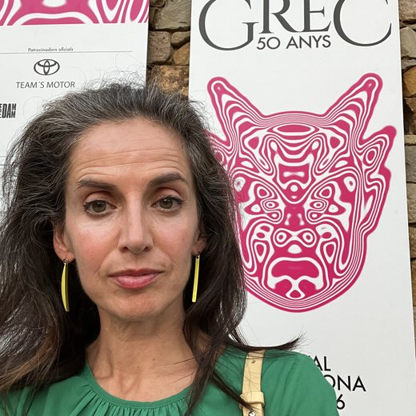

Festivals, celebration and the city
Beyond the Olympic Games and the Capitals of Culture: the Commonwealth Games, UK Cities of Culture, world expos, biennials and the festivals cities make for themselves. I study what they do for a place, and why collective celebration matters.


Why it matters
Why festivals matter now more than ever
Festivals and special events are how cities gather, celebrate and argue in public. My research asks what they leave behind: for artists and audiences, for a city's image and economy, and for the people who live where they happen.
That question now runs through Euphoric Cities, my essays on collective joy, protest and the right to the festival.
Projects
Newest first
| Event and years | What I did | Focus |
|---|---|---|
| UK City of Culture2023–2025 | Led a study for the Department for Culture, Media and Sport | What bidding leaves behind for runner-up candidate cities · Read the report (2025) |
| Eurovision Song Contest, Liverpool2023 | Member, advisory evaluation board | Eurovision and cultural regeneration in Liverpool |
| Edinburgh's festivals2023 | Advisor, Edinburgh Festivals | Integrated planning for the city's peak festival season |
| Walk the Planksince 2022 | Chair of the Board of Trustees | Outdoor arts |
| Unboxed: Creativity in the UK2020–2023 | Member, advisory group | The UK's 2022 festival of creativity |
| What Future for Festivals?2021 | Keynote and forum moderation, Salzburg Global Seminar | The future of festivals after the pandemic · The report |
| Hull 2017, UK City of Culture2017–2018 | Principal investigator, the British Council's role in the UK City of Culture programme | Report with T. Cox (2018) · Read the report · The project |
| UK City of Culture2009 | Advisor to DCMS on the bidding process | How cities bid for the UK City of Culture title |
| Forum Barcelona 20042003–2004 | British Academy study of the Universal Forum of Cultures | The value of city-specific cultural policies for a universal event · The project |
| Manchester 2002 Commonwealth Games2002–2003 | Evaluated Cultureshock, the North West cultural programme | Evidence behind the first ambitious arts programme at a Commonwealth Games · The evaluation |
In the field
Biennials, light festivals, film and music festivals, and song contests.







Lyon photo © Juliette Treillet / LUCI Association
Reports
- 2025UK Cities of Culture: Stakeholder Interviews with Runner-up Applicants. Department for Culture, Media and Sport.
- 2021What Future for Festivals?, with other participants in the Salzburg Global programme. Salzburg Global Seminar.
- 2018The British Council and the UK City of Culture Programme: study report and thought piece, with T. Cox. On Hull 2017, for the British Council.
- 2009Measuring the Impacts of Large Scale Cultural Events: A Literature Review, with F. Langen. Impacts 08, University of Liverpool.
- 2003Evaluation of Cultureshock, Cultural Programme of the Manchester 2002 Commonwealth Games. Arts Council England North West.
Essays, chapters and papers
- 2021Why festivals and special events matter now more than ever. UKRI.
- 2020The future of mega-events, and festivals' crucial role. Salzburg Global Seminar.
- 2024Mega-events and cultural leadership. In Cultural Leadership in Practice. Routledge.
- 2017Cultural policy and mega-events. In The Routledge Handbook of Global Cultural Policy, V. Durrer, T. Miller and D. O'Brien (eds). Routledge.
- 2014Media event vs street festival: reclaiming street festivities as key to the local sustainability of global mega-events. Future of Places conference, Buenos Aires.
- 2004Urban regeneration, arts programming and major events: Glasgow 1990, Sydney 2000 and Barcelona 2004. International Journal of Cultural Policy 10(1).
- 2004La dimensión cultural de los macro-eventos en el 2004: potenciales y limitaciones para una experiencia sostenible. Boletín GC: Gestión Cultural 6.
“The right to the festival depends on the right to still live near the square when the music stops.”
Beatriz García, in Whose city?, October 2026
Talks
Speaking →Victoria and Albert Museum · Salzburg Global Seminar · Edinburgh International Culture Summit · LUCI and the Fête des Lumières, Lyon · A to Z Sofia Jazz Festival · Expo 2020 Dubai · Universal Forum of Cultures · World Design Capital Taipei · International Festival of Business, Liverpool · Euro-Festivals Consortium, Vienna
Selected platforms. More on speaking.
Writing
Euphoric Cities essays and posts from the archive, newest first
All festival and event posts in the archive · About Euphoric Cities
Planning a festival or major event, and what it should leave behind?
Tell me what you are planning and when, in English, Spanish, Catalan or French.
Other research themes
All research →From Sydney 2000 to Milano Cortina 2026: how the Games use culture, and what it leaves behind.
Open the theme → European Capitals of CultureForty years of the programme, from Glasgow 1990 and Liverpool 2008 to Nikšić 2030.
Open the theme → Cities, placemaking and regenerationCulture-led regeneration, city branding and creative clusters.
Open the theme → Evaluation and cultural valueFrameworks for measuring what culture does, from Impacts 08 to the Culturometer.
Open the theme →